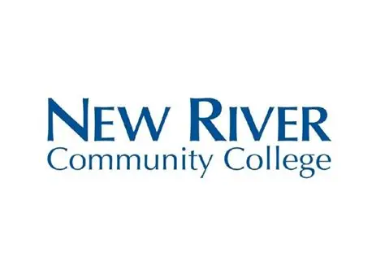
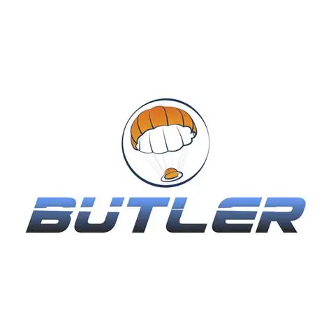

Education

Bachelor of Science in Aerospace Engineering
Jan 2026 – May 2028
Specialization: Dynamics, Control, and Estimation | Minor: Mathematics

Associate of Science (A.S.), Engineering
Aug 2024 – Dec 2025
Graduated Magna Cum Laude
Engineering Experience

Engineering Intern
- Designed a line continuity tool in SolidWorks, optimizing geometry to eliminate sharp edges and prevent cord snagging.
- Executed 150+ Mecmesin/hydraulic tensile tests and performed 10 operational drop tests with a custom load cell amplifier enclosure.
- Engineered a quality control program referencing PIA documents and MIL-STD-849D, improving inspection efficiency by 20%.
SolidWorks
Mecmesin Testing
MIL-STD-849D
Quality Control

Space Systems Intern
- Collaborated with NASA to conduct research on critical infrastructure resilience and geospatial risk factors, authoring technical papers on climate-induced aviation density altitude penalties.
- Evaluated LEO satellite constellation resilience and Starlink space-based communications to enhance disaster situational awareness.
LEO Constellations
Geospatial Intelligence
Risk Assessment
OSINT
Regulatory Engineering Intern
- Researched CubeSat systems, subsystems, mission requirements, and supporting regulatory documentation.
- Identified and reviewed CubeSat components and technical materials, gathering and organizing FCC-related supporting documents.
CubeSat Systems
Aerospace Regulations
FCC Compliance
Extracurriculars & Leadership
Space Law & Policy Specialist
- Participated in an online portion of the program alongside approximately 500 selected scholars.
- Hand-selected as one of ~180 students to participate in the immersive summer academy portion at NASA Langley.
- Served as the Space Law and Policy Specialist for Mission Integration, leading approximately 50 scholars across four teams through the legal framework of aerospace.
Space Law & Policy
Mission Integration
Team Leadership
Commissioner of Revenue
- Elected by peers in Burke City to manage tax policies and revenue generation for the simulated city of Burke.
- Collaborated with the city council and state officials to allocate funds and balance the municipal budget.
Student Member
- Engaging with aerospace professionals and actively preparing to participate in aircraft design competitions such as Design/Build/Fly (DBF) in Fall 2026.
Academic & Research Projects
Starlink Sentinel: Autonomous LEO Collision Avoidance
Custom Orbital Dynamics Simulation
May 2026
- Engineered a computational physics simulation in MATLAB to track orbital trajectories.
- Defined parameters for collision avoidance protocols in Low Earth Orbit (LEO) environments.
MATLAB
Orbital Mechanics
State Estimation
Extended Kalman Filters
Martian Habitat Radiation Shielding Analysis
Computational Physics Research
Spring 2026
- Evaluated material radiation shielding efficiency for long-duration space habitats using MATLAB.
- Analyzed varying material densities and simulated radiation penetration metrics.
MATLAB
Computational Physics
Material Properties
Honors & Awards
Ray E. and Mary B. Epperly Family Fund Scholarship
Community Foundation of the New River Valley
May 2024
Awarded in recognition of academic integrity, scholastic excellence, and dedication to engineering studies. Featured in the CFNRV 2024 Scholarship Recipients Announcement.
Steel Dynamics Scholarship
Steel Dynamics, Inc.
May 2024
Awarded to support undergraduate studies based on excellent academic achievement.
President’s Award for Educational Excellence
U.S. Department of Education
May 2024
Recognized for outstanding academic excellence, maintaining a high cumulative grade point average, and demonstrating a commitment to rigorous coursework.
Volunteering
Warehouse Assistant | Montgomery County (VA) Public Schools
Jul 2025 - Aug 2025
- Maintained facility operations and cleanliness, demonstrating a strong work ethic, reliability, and attention to detail.
- Worked independently and collaboratively with a team.
- Managed time efficiently to ensure a safe, organized environment for incoming students and staff by delivering teachers' orders to their classrooms.
Farmhand | Sinkland Farms, LLC
Jul 2024 - Oct 2025
- Executed outdoor maintenance and groundskeeping tasks, showcasing adaptability and a willingness to take on hands-on, physical work.
- Collaborated effectively with farm staff and other volunteers to ensure smooth operations of the grounds during festival time and off normal operating hours.
Verified Training & Certifications
IS-111.a: Livestock in Disasters
May 28, 2026
- Successfully completed the Independent Study course[cite: 15].
- Issued by FEMA National Disaster & Emergency Management University[cite: 15].
- Earned 0.40 IACET CEUs for continued professional development[cite: 15].
- View Verified Certificate (PDF)
IS-120.c: An Introduction to Exercises
Aug 21, 2026
- Successfully completed the Independent Study course[cite: 1].
- Issued by FEMA National Disaster & Emergency Management University[cite: 1].
- Earned 0.30 IACET CEUs for continued professional development[cite: 1].
- View Verified Certificate (PDF)
IS-130.a: How to be an Exercise Evaluator
Aug 21, 2026
- Successfully completed the Independent Study course[cite: 2].
- Issued by FEMA National Disaster & Emergency Management University[cite: 2].
- Earned 0.30 IACET CEUs for continued professional development[cite: 2].
- View Verified Certificate (PDF)
IS-235.c: Emergency Planning
Aug 21, 2026
- Successfully completed the Independent Study course[cite: 9].
- Issued by FEMA National Disaster & Emergency Management University[cite: 9].
- Earned 0.50 IACET CEUs for continued professional development[cite: 9].
- View Verified Certificate (PDF)
IS-238: Critical Concepts of Supply Chain Flow
Jul 18, 2026
- Successfully completed the Independent Study course[cite: 14].
- Issued by FEMA National Disaster & Emergency Management University[cite: 14].
- Earned 0.20 IACET CEUs for continued professional development[cite: 14].
- View Verified Certificate (PDF)
IS-288.a: Role of Voluntary Organizations
Jul 18, 2026
- Successfully completed the Independent Study course on the Role of Voluntary Organizations in Emergency Management[cite: 13].
- Issued by FEMA National Disaster & Emergency Management University[cite: 13].
- Earned 0.10 IACET CEUs for continued professional development[cite: 13].
- View Verified Certificate (PDF)
IS-700.b: National Incident Management System
Jul 26, 2026
- Successfully completed the Independent Study course[cite: 10].
- Issued by FEMA National Disaster & Emergency Management University[cite: 10].
- Earned 0.40 IACET CEUs for continued professional development[cite: 10].
- View Verified Certificate (PDF)
IS-1300.a: Introduction to Continuity
Aug 21, 2026
- Successfully completed the Independent Study course[cite: 12].
- Issued by FEMA National Disaster & Emergency Management University[cite: 12].
- Earned 0.10 IACET CEUs for continued professional development[cite: 12].
- View Verified Certificate (PDF)
IS-66: Preparing the Nation for Space Weather Events
Apr 19, 2026
- Successfully completed the Independent Study course[cite: 8].
- Issued by FEMA National Disaster & Emergency Management University[cite: 8].
- Earned 0.20 IACET CEUs for continued professional development[cite: 8].
- View Verified Certificate (PDF)
Communicating Climate Change Scenarios
Jun 20, 2026
- Successfully completed the online learning course "Communicating Climate Change Scenarios With Decision Makers Lecture by Dr. Holly Hartmann, Research Hydrologist"[cite: 11].
- Issued by the University Corporation for Atmospheric Research's The COMET® Program[cite: 11].
- The online learning course required .75 - 1.00 hours to complete[cite: 11].
- View Verified Certificate (PDF)
Space Weather Basics, 3rd Edition
Aug 21, 2026
- Successfully completed the online learning course[cite: 5].
- Issued by the University Corporation for Atmospheric Research's The COMET® Program[cite: 5].
- The online learning course required .75 - 1.00 hours to complete[cite: 5].
- View Verified Certificate (PDF)
Alberta Clipper Case Exercise
Jul 18, 2026
- Successfully completed the online learning course[cite: 3].
- Issued by the University Corporation for Atmospheric Research's The COMET® Program[cite: 3].
- The online learning course required 1.50 - 2.00 hours to complete[cite: 3].
- View Verified Certificate (PDF)
Facilitating Stakeholder Discussions
Jul 17, 2026
- Successfully completed the online learning course "Facilitating Stakeholder Discussions to Improve Impact-Based Forecasting Approaches"[cite: 4].
- Issued by the University Corporation for Atmospheric Research's The COMET® Program[cite: 4].
- The online learning course required .75 - 1.00 hours to complete[cite: 4].
- View Verified Certificate (PDF)
COSMIC: Atmospheric Remote Sensing
May 28, 2026
- Successfully completed the online learning course "COSMIC: Atmospheric Remote Sensing for Weather, Climate, and the Ionosphere"[cite: 6].
- Issued by the University Corporation for Atmospheric Research's The COMET® Program[cite: 6].
- The online learning course required 0 - .25 hours to complete[cite: 6].
- View Verified Certificate (PDF)
Satellite Remote Sensing Capabilities for Ocean Color
May 27, 2026
- Successfully completed the online learning course[cite: 7].
- Issued by the University Corporation for Atmospheric Research's The COMET® Program[cite: 7].
- The online learning course required .25 - .50 hours to complete[cite: 7].
- View Verified Certificate (PDF)
Radio Wave Propagation
Aug 21, 2026
- Successfully completed the online learning course "Radio Wave Propagation".
- Issued by the University Corporation for Atmospheric Research's The COMET® Program.
- The online learning course required 1.00 - 1.25 hours to complete.
- View Verified Certificate (PDF)
Fundamentals of Open-Source Intelligence (OSINT)
Aug 21, 2026
- Successfully completed the online certificate program.
- Issued by the Alison online learning platform.
- View Verified Certificate (PNG)
Root Cause Analysis Tools and Techniques
Aug 21, 2026
- Successfully completed the online certificate program.
- Issued by the Alison online learning platform.
- View Verified Certificate (PNG)
Analyze Satellite Data to Investigate Plant Health
2026
- Successfully completed the online learning course.
- Issued by CognitiveClass.ai (IBM).
- View Verified Certificate (PNG)
IT Management - Building Information Systems
Aug 22, 2026
- Successfully completed the online certificate program.
- Issued by the Alison online learning platform.
- Demonstrated 100% start-to-completion in the course curriculum.
- View Verified Certificate (PNG)
Information Systems Development and Society
Aug 22, 2026
- Successfully completed the online learning course.
- Issued by the Alison online learning platform.
- Demonstrated 100% start-to-completion with an 88% average score.
- View Verified Certificate (PNG)
Technical Skills
Aerospace & Dynamics
Software & Programming
CAD, Simulation & FEA
Systems & Compliance
Hardware & Testing